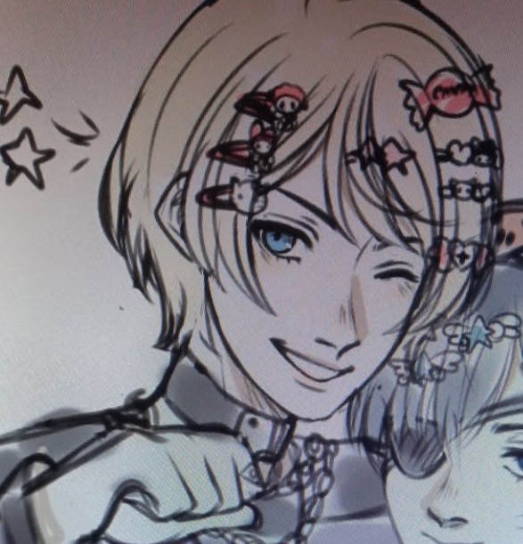
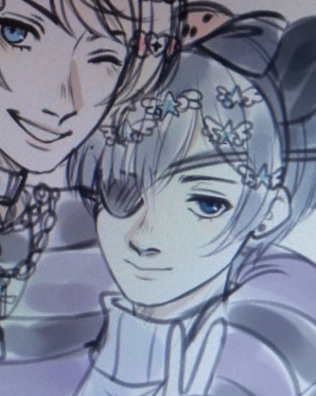

-

-

-
All About Plurality!!
The plurality that this FAQ refers to is a medical condition listed in the DSM. While both OSDD (Other Specified Dissociative Disorder) and Dissociative Identity Disorder (DID) cause a system to form, this FAQ focuses on DID as the writer is diagnosed with that specifically rather than OSDD. Some information about OSDD will be provided, however. 1.5% of the population is affected by DID/OSDD. While it is not the most common disorder, you are likely to encounter at least one system in some way going about your life in this world.
DID (and OSDD) are cluster B personality disorders that occur from repetitive and/or severe childhood trauma. Typically, the child is undergoing trauma and has a strained relationship with caregivers. This trauma causes the psyche to fragment in order to protect itself, a defense mechanism needed for the survival of that child. This occurs before the personality is fully solidified and creates a DID/OSDD "system." This system is medically defines as having two or more alternate states of personality.
A system, in more descriptive terms, is a single body whose identity contains multiple (at least two) separate states of consciousness (called "alters" or "headmates") who live in some kind of internal world. These alters may have different names, pronouns, or other identifying traits that the collective identity of the person/body. These systems can function differently depending on whether the system has DID or OSDD. Some systems switch more than others, have fewer members, or have types of alters others do not.
About Us (AkuTen System)!!
AkuTen (they/them) is a diagnosed AFAB POC DID System that is polyfragmented (over 100 alters within the system). They are somewhat private about their plurality but lead online on certain profiles with it to engage with others as their true selves. Advocating for plurals/multiples and spreading information, acceptance, and kindness in what can be an often divided community is important to them. They hope that this FAQ provides some information for others and is not used or met with any negative responses.
The images on this site at the top of the page are commissioned. Please do not use them for anything else. They are images of system members of AkuTen purchased and owned by AkuTen and the commissioned artist (MariYumiSan).
Additional Information and Resources!!
Below are several references for system information, rather than information about systems and plurality from plurals/systems living with DID or OSDD. Multiplicity&Me (who has since undergone one option of healing DID trauma called "final fusion") was a system whose YouTube videos we referenced when we were originally getting diagnosed with our condition. Their videos are educational, and they have a degree (and thus the authority to share educational material more so than the average person. They were a great resource! They and other system/DID YouTubers at the time helped us/my system recognize our symptoms and realize we were plural and not a singlet (non-plurla).
Please note that there is discourse in the system/plural community about certain creatives and systems who speak about plurality online; however, like most situations, there is nuance to this drama, and some of the information shared by these users is still correct. Because of this, please excuse the potential cotrovery that is related to DissociaDID (YouTube), while they have involvement in a lot of discourse online through past issues with them, their videos are fairly correct and concise (at least those I have linked). This FAQ is not a place for discourse and thus does not contain any information about scandals. Please keep any and all discourse (including debating the existence of systems) away from this page.